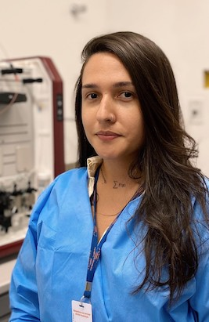
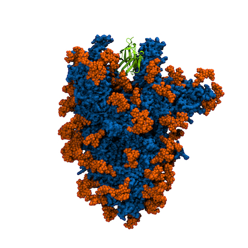

Wenny Camilla dos Santos Adan
Quem sou eu?
Possui bacharelado em química (2017) e Mestrado em Química (2020) pela Universidade Federal de Sergipe. Neste momento, é aluna de Doutoramento do PPG-Química da Universidade Federal de Pernambuco e colaboradora do Instituo Aggeu Magalhães/FIOCRUZ-PE, onde desenvolve as suas atividades de pesquisa. Foi aluna de doutorado visitante no Instituto de Química Biológica António Xavier ? Universidade Nova de Lisboa (ITQB NOVA) e Instituto Gulbenkian de Ciência (IGC, Portugal).
Seus interesses de pesquisas atuais concentram-se na expressão e purificação de proteínas recombinantes com afinidade por epítopos virais, cultivo, propagação e ensaios de neutralização virais e com partículas pseudovirais (BLS2 e BLS3). Tem experiência técnica com Sistema Líquido de Cromatografia de Alta Eficiência (FPLC), equipamento de termoforese em microescala e dicroísmo circular. Possui experiência com bioinformática estrutural e métodos de química computacional baseados em mecânica molecular.
Minhas publicações